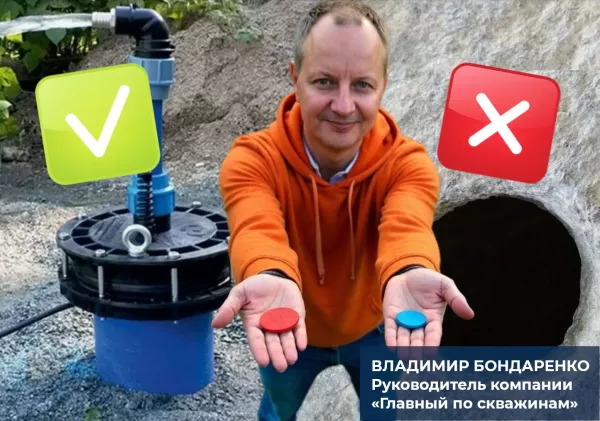
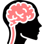
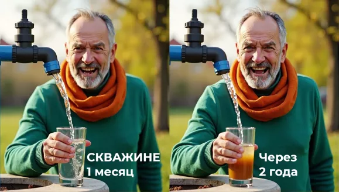
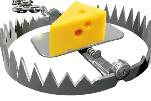

Нужна скважина на всю жизнь
или дырка в земле с мутной жидкостью?
Почему 30% скважин в Свердловской области
выходят из строя в первые 3 года?

Сладкая ложь или горькая правда?
Красная или синяя таблетка? А вы помните эти символы из фильма «Матрица»?
Синяя таблетка оставляет в блаженной иллюзии, красная — отправляет в суровую реальность.
Представьте. Солнечным утром вы просыпаетесь в своем доме, выходите на просторную террасу и усаживаетесь в любимое кресло.
Слушаете пение птиц, вдыхаете аромат свежего воздуха, наполняете чашечку свежезаваренного кофе и наслаждаетесь красивым видом.
О такой жизни мечтают домовладельцы, поверив обещаниям разных «специалистов по бурению».
И тому подобная ересь... И поздравляю
Вы в МАТРИЦЕ своих иллюзий !!!
Но есть и другая сторона медали, она же «красная таблетка» и суровая правда жизни.
Через пару лет после бурения вы рискуете получить:
- 😟 Рыжую воду с запахом болота
- 😟 Насос, забитый илом (ремонт от 20 000₽)
- 😟 Буровую компанию-призрак, которая уже «забыла» ваш адрес и поменяла телефон.

Почему сладкая ложь
побеждает голос разума?
Наш мозг склонен верить, что можно сэкономить и не нужно платить за лишние «понты». Но Уральские глины и плывуны не прощают халтуры. Дешевые (читай тонкие) трубы сдавливает и через 2 года ремонт скважины + новый насос.

ПОТОМУ что нам продают не скважину — а МЕЧТУ. Мечту о «дешево и навсегда». И мозг человека с удовольствием принимает сигналы.
Самое обидное, что проблемы редко проявляются сразу. Обычно первые 2 года скважина работает нормально. Вы успокаиваетесь, думаете, что всё в порядке. А потом начинаются «сюрпризы», и многие из них уже невозможно исправить — только бурить заново.
50% домовладельцев совершают ОДИНАКОВЫЕ ОШИБКИ, приводящие в ЛОВУШКИ нечестных буровиков

Всех этих проблем можно избежать, если знать, на что обратить внимание. На следующей странице я расскажу про ловушки. Готовы удивиться?
Нажмите на кнопку 👇
Узнать про ловушки ➔